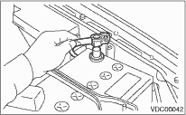

CAUTION:
Check that front wheels are positioned in a straight ahead direction.
1. Install the steering angle sensor to the steering column while confirming that the sensor is positioned as shown in the figure.
2. Align the roll connector with the center.

3. Place the roll connector on top of the steering angle sensor, then tighten the bolts that secure the roll connector and steering angle sensor.
4. Tighten the bolts which secure the roll connector and steering angle sensor to the steering column.
5. Put the steering wheel in a neutral position and install it onto the steering shaft.
Tightening torque:
45 N·m (4.6 kgf-m, 33 ft-lb)
Column cover-to-steering wheel clearance:
2 — 4 mm (0.08 — 0.16 in)
CAUTION:
Insert the roll connector guide pin into the guide hole on lower end of steering wheel surface, being careful not to damage them. Remove by drawing out the airbag system connector, horn connector and cruise control connectors from the guide hole of steering wheel lower end.
6. Install the airbag module to the steering wheel.
WARNING:
Always refer to “Airbag System” before servicing.
7. Connect the battery ground cable to the battery.

CAUTION:
After installation, always make the following two settings.
• SRS roll connector and steering angle sensor center setting
• Yaw rate & lateral G sensor 0 point setting
These two procedures are required to make the VDCCM recognize what position the vehicle is in later. Refer to VDCCM Adjustments for procedures regarding the above settings.